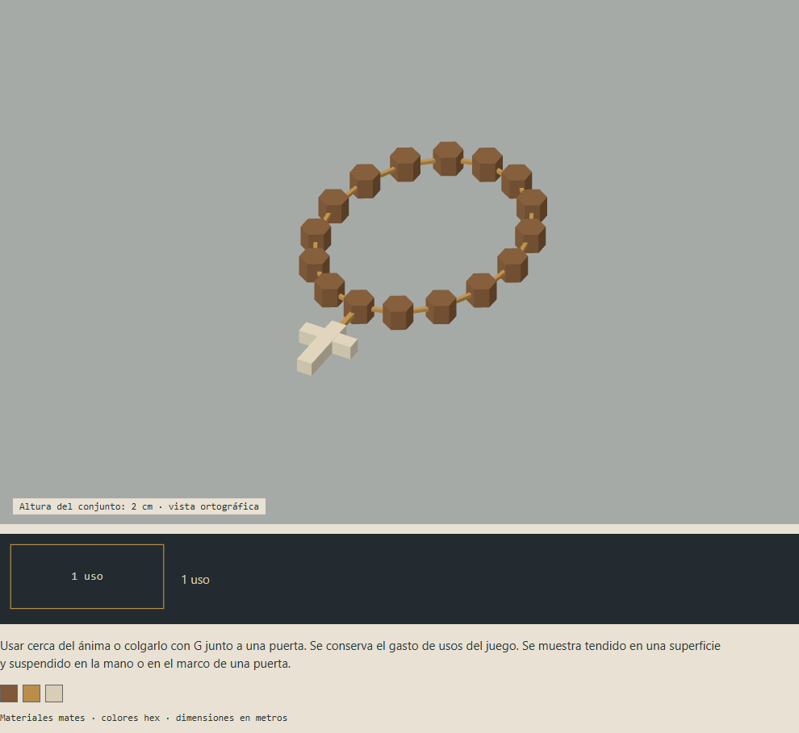
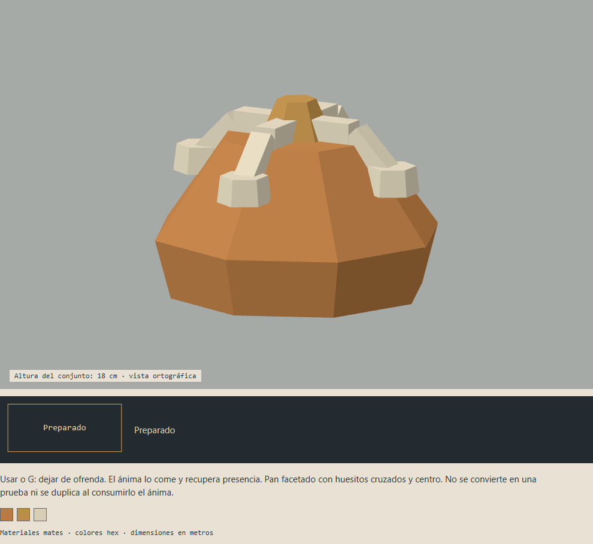
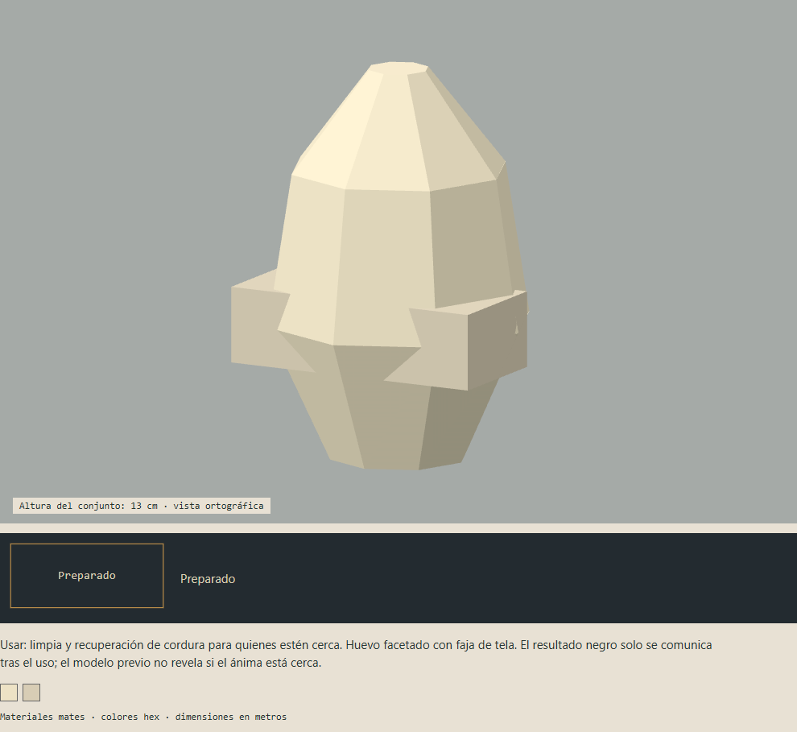
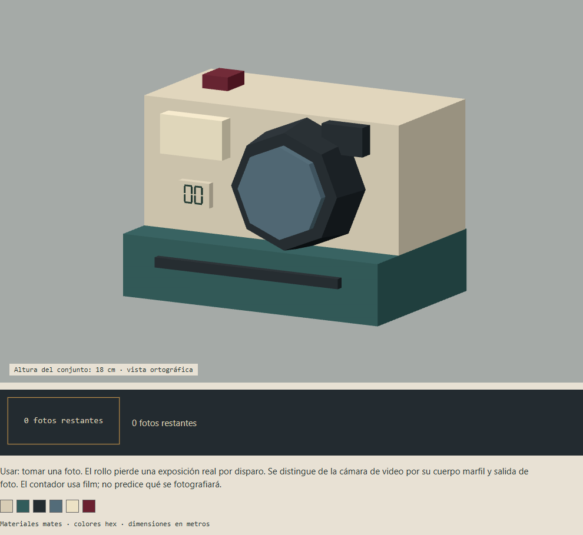
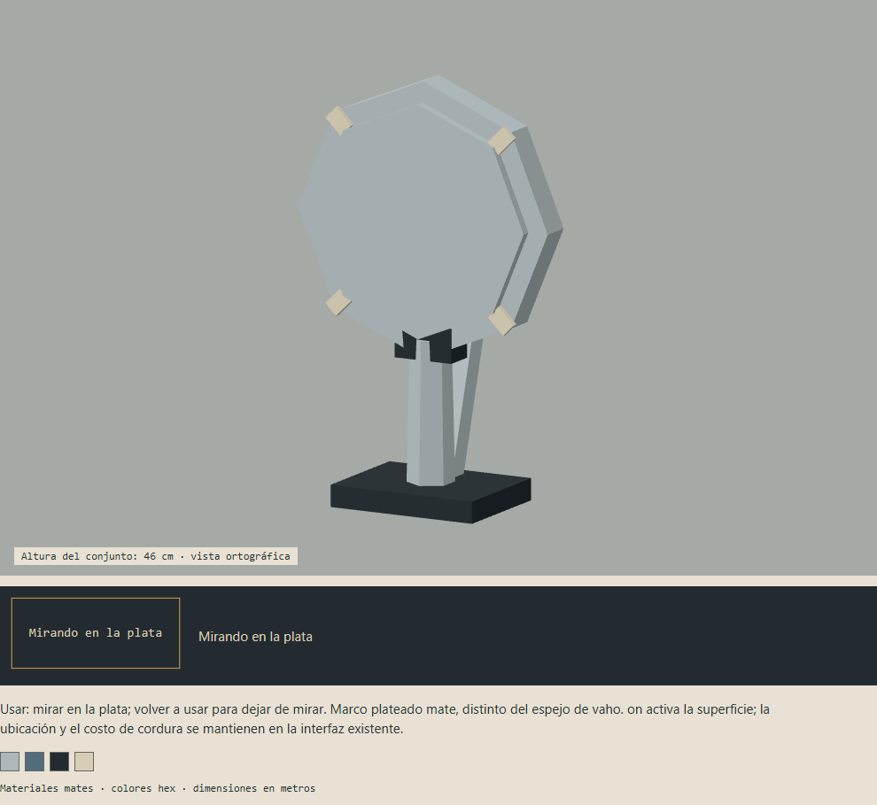
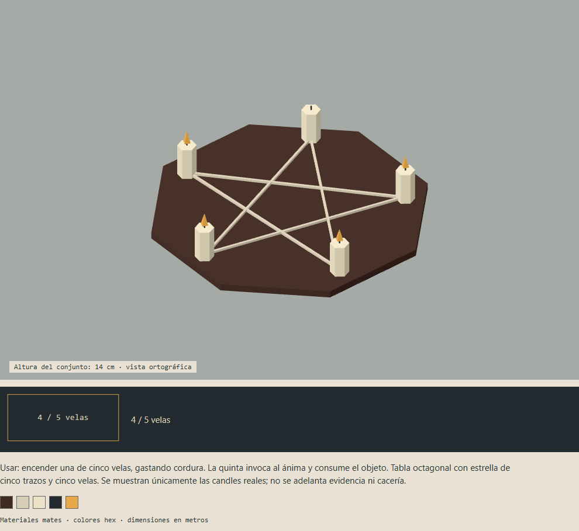

18 modelos compartidos con el juego · 399 piezas editables · materiales mates y formas facetadas






Cada modelo respeta cómo se sostiene, se coloca y se consume.
Cartas, deseos, alfileres, velas y rollo muestran sus cantidades reales.